SWUP
A self-initiated project for a Duolingo-style app to promote conscious spending and emotional saving.
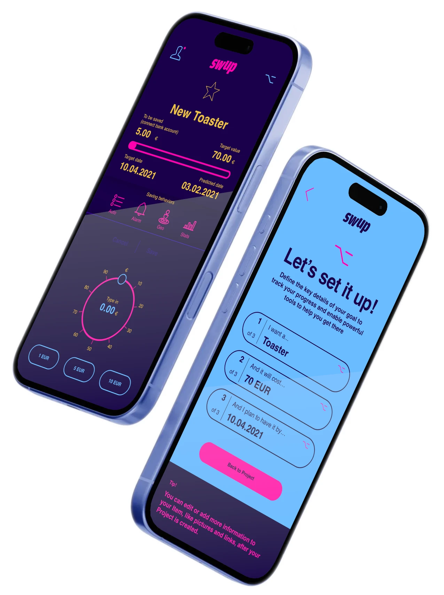
Project overview
My role
- Entrepeneur
- Full-stack designer
Tasks
- Market research
- Design Thinking for product creation
- Business design for canvasing
- UX/UI design
Challenge
SWUP is a self-initiated product designed to break the cycle of consumerism and the anxiety it creates by empowering individuals to take control of their consumption and savings habits. Using gamification, SWUP makes saving money as rewarding and engaging as spending, turning financial goals into achievable challenges. Meanwhile, AI-driven insights analyze spending patterns to identify smart savings opportunities, helping users make more intentional decisions with their money. By combining technology and behavioral psychology, SWUP transforms financial well-being into an achievable goal.
Research
Research and
Business canvasing
Researching a financial product involved a comprehensive approach that included exploring various financial mindsets, conducting competitor analysis, and engaging in interviews with potential users. By studying usability patterns, we identified ways to make the process of investing small amounts of money more accessible to a broader audience. Additionally, developing a business canvas to outline prospective financing paths to ensure the product's sustainability in a competitive market.
Converting insights into designs
We created a comprehensive list of requirements that helped us outline and structure the essential functionalities for a Minimum Lovable Product. By integrating usability criteria, we developed the wireframes needed for initial testing.
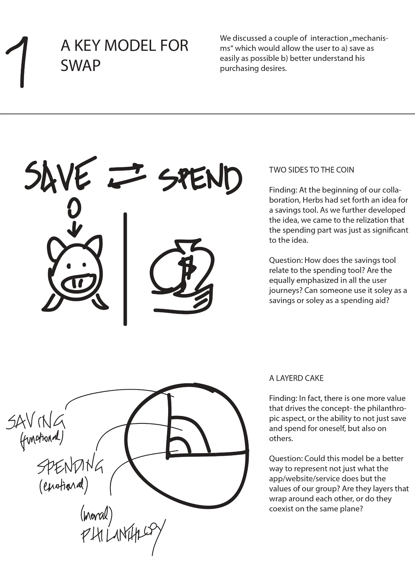
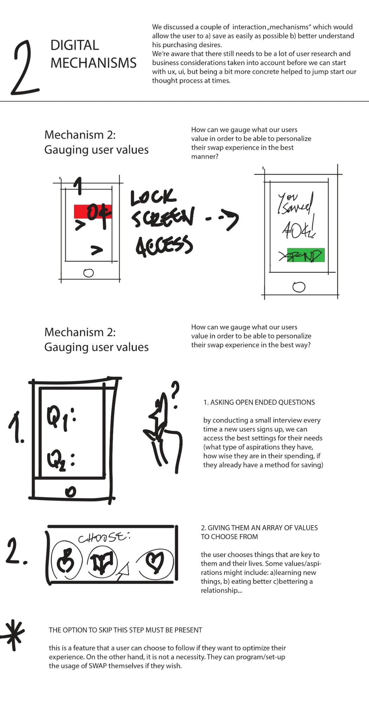
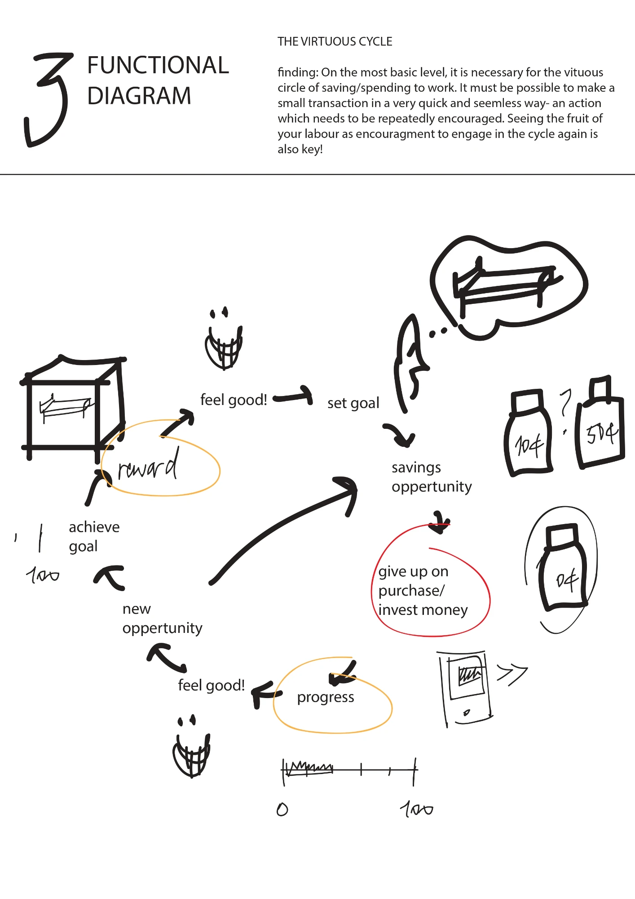
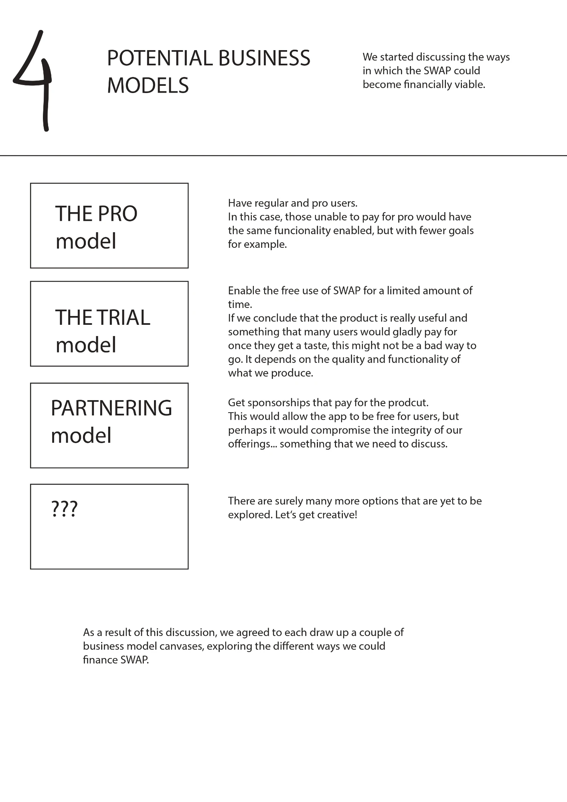
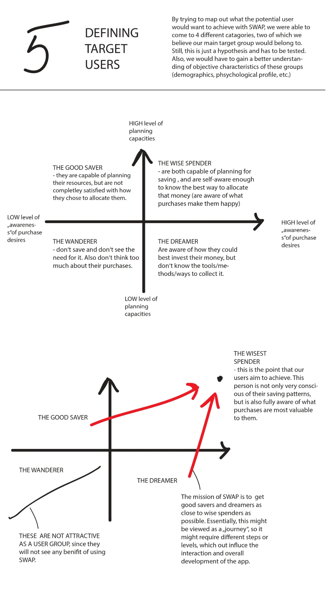
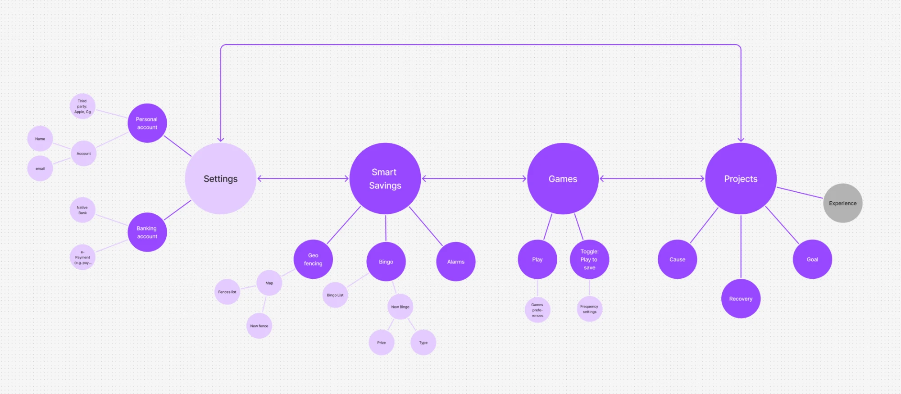
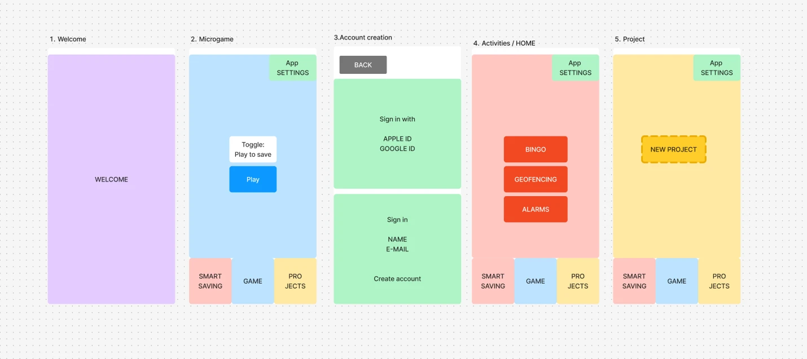
Guided experience
We leveraged guided experiences to reduce attrition among our users. By providing friendly support and clear, step-by-step guidance, we helped individuals feel more confident and engaged throughout their journey.
Energetic and clear
Design
The interface was designed to break the dullness of financial apps and engage a younger audience on productive financial behaviors.
Gamification of savings
We have integrated behavioral design with gamification to uncover and capitalize on everyday saving opportunities. By understanding human behavior and incorporating engaging game-like elements, we empower individuals to recognize potential savings in their daily routines and take proactive steps to act on them.
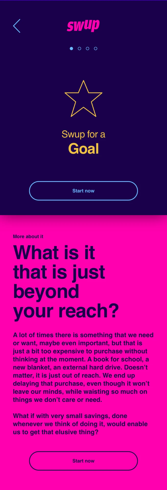
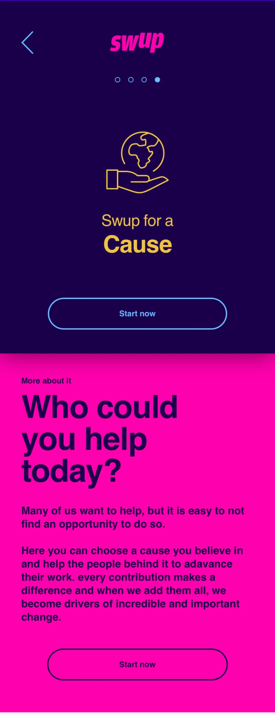
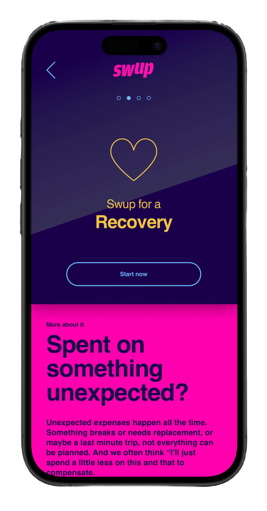
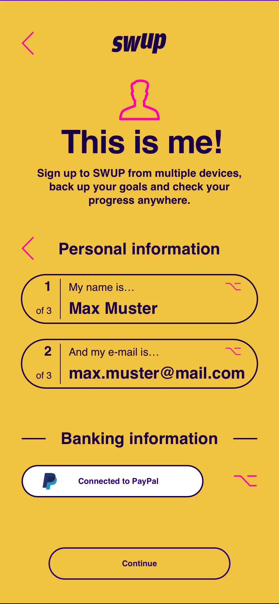
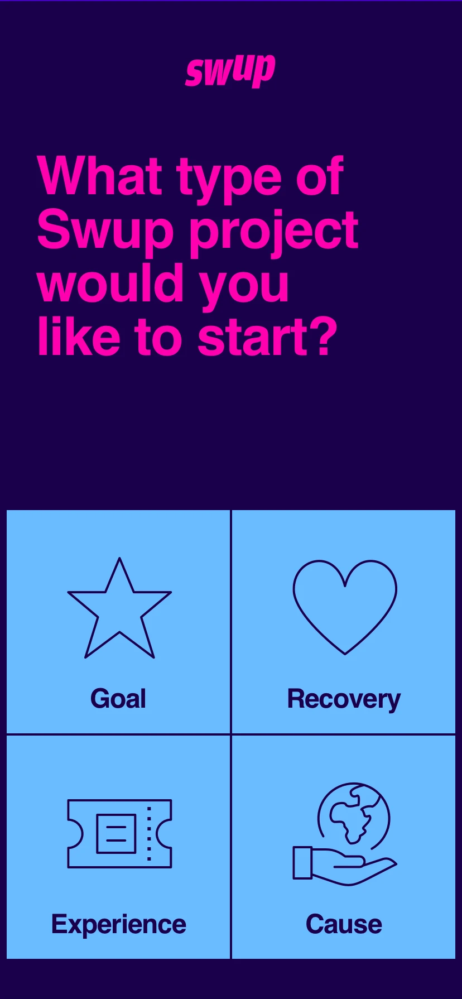
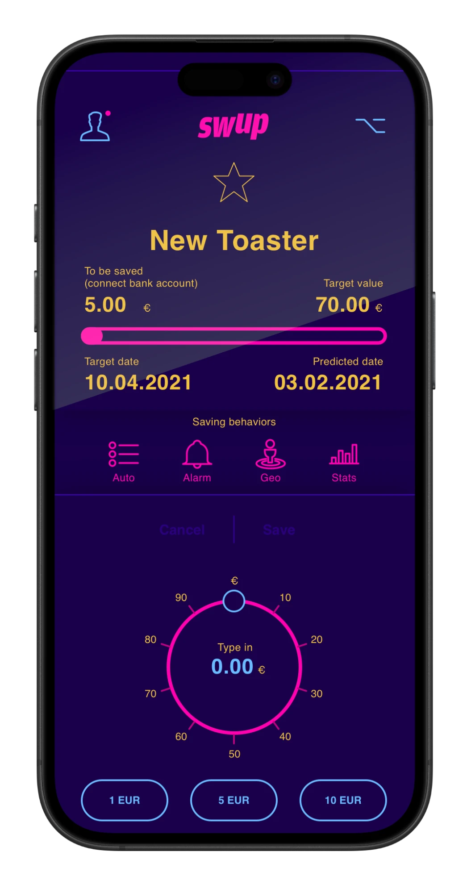